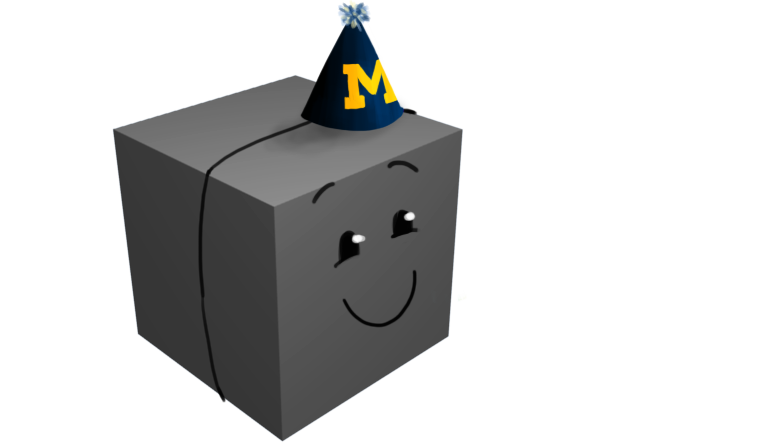
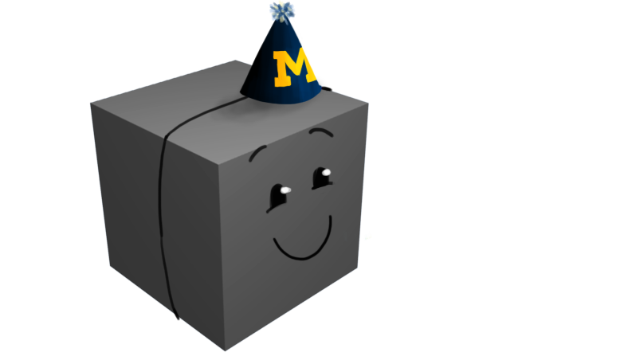

this box doesn't actually close properly so it's just going to refresh the page, sorry.
This site was created throughout the weekend of April 11th, 2015, during the hackathon Bitcamp hosted at the University of Maryland. While brainstorming, one of our team members, Mokona, stumbled across a small stress cube that was being handed out by one of the sponsers. With cube in hang and goal in sight, we sought out to create an interactive website dedicated to our near and dear friend Cubey.
You can type out commands such as
hello
hi
you suck
you really suck
happy birthday
The food images are also fully functional and can be clicked and dragged to feed Cubey.

 
